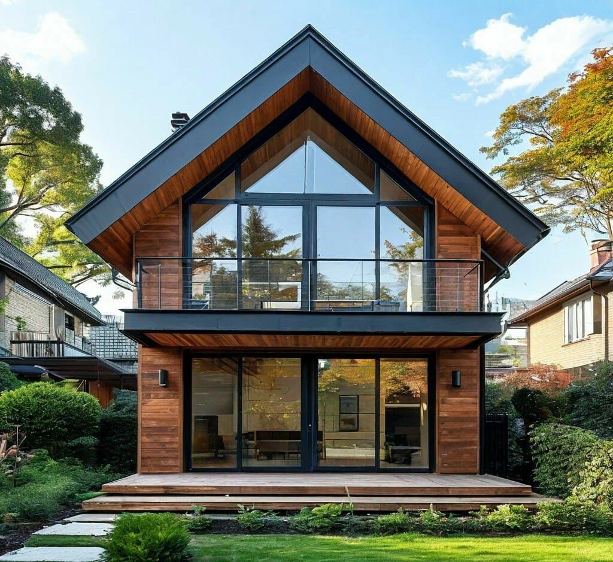
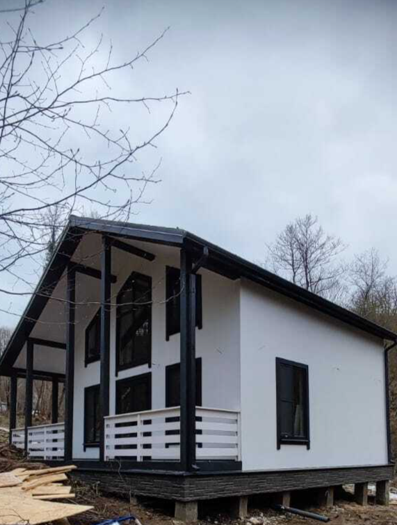

CON WOOD
Каркасные дома под ключ
Строим каркасные дома. Выберите подходящую архитектуру и обсудите планировку и состав работ под участок.
Посмотреть домаПРИМЕРЫ РЕШЕНИЙ
От фасада до интерьера
Сравните дома по форме и остеклению. В проекте обсудим планировку, материалы и состав строительства.

Каркасный дом
CON WOOD ·
Каркасный дом
Сравните дома по форме и остеклению. В проекте обсудим планировку, материалы и состав строительства.
Обсудить строительство